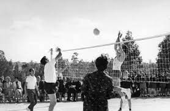

Como o voleibol era jogado e como era conhecido no seu início? E assim surgiu o vôlei - chamado de "mintonette" - que, graças ao fato de cada uma das equipes ficarem separadas por uma rede, trazia menos chances de lesões. Além disso, era menos exigente em termos físicos do que o basquetebol - uma vez que os jogadores não precisavam correr ao longo do jogo por toda a quadra.
O vôlei foi criado nos Estados Unidos por um professor de educação física chamado William George Morgan, em 1895. Antes de inventar as primeiras regras, o seu principal objetivo era desenvolver um esporte em que os jogadores tivessem pouco contato físico entre eles.
Quando criou o vôlei, a pretensão de Morgan era causar menos lesões entre os participantes, de modo que diferentes pessoas pudessem participar dos jogos. Nessa época, ele atuava como chefe de educação física em uma Associação Cristã de Moços (ACM) localizada na cidade de Massachutes.
Os primeiros jogos eram realizados em quadras improvisadas, sem uma rede específica, e usava-se a câmara de uma bola de basquete para jogar. Com o tempo, o esporte foi evoluindo e chegou até o Canadá no ano de 1900, conhecido como “mintonette”.
Logo depois, em 1908, o esporte se expandiu pelo continente asiático, sendo praticado pela China e no Japão. Em 1910, ele avançou um pouco mais e chegou até o Peru, primeiro país da América do Sul em que o vôlei foi praticado.
Anos mais tarde, em 1947, foi fundada a FIVB (Federação Internacional do Voleibol), em Paris. Até os dias atuais, o órgão é responsável por organizar todas as atividades relacionadas ao esporte no mundo.
O primeiro campeonato mundial de vôlei realizado pela FIVB aconteceu na Checoslováquia (antigo país do continente europeu), em 1986. O torneio foi realizado apenas com a participação de times masculinos e a Rússia foi o país vencedor.